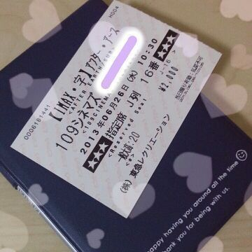

| 2013/06 26 Wed | 川村真洋 トムとジェリーやってる= ・ω・=！！ めっちゃ懐か しい。おもちろい♪ ろってぃ− |
皆さん、
こんちわ
おはよー
こんばんわー(・∨・)/
ろってぃ−だよんよん＼(^o^)／
今日は 何ヵ月ぶりだろ？
と感じで久しぶりに
映画館に行って参りました(〃∨〃)
ズバリ！！
見たのは これっ//
ぢゃぁ〜〜ん ) ) )

『アフター・アース』 最近は、映画見たいなぁ〜と
って感じやったんですけど、
TVで告知を見た瞬間に
『うあっ！ これ見たい！！』
と思って 行っちゃいました＼(^o^)／
洋画でアクション系 ！！！
そして なんと っ)))
ウィル・スミスと
ジェイデン・スミス親子☆★
感動しました！
良かったです(ノ_＜。)
あの でっかいスクリーンで
上映されると迫力が最高です\(〃∨〃)/
ぴょん.
そして今日、、ベッドのシーツ類
枕カバーとか
一通り洗濯しました=・ω・=
モフモフでいい匂いに
なったぉ*・ω・* わ〜ぃ
毛布が余分に２つあるんやけど
ど−しよお (>_<)？
メンバー誰かいらんかなあ？
・・・・
ぴょん.
し(^3^)/もん返し
いきますでーぃ ！
☆夏は髪を乃木カラーにする！
まひろもやらない？
★ぇーっ、ぢゃあさ
今年の夏は人気者だねっ。
ぁあ〜 そうだね、まひろもぉ〜...
ウドドドドwww
そんなこと
し、ま、てん(^ー^)わら
☆ろってぃ−も昼寝する？
★よくするよぉ〜ヽ(´▽｀)/
☆次の握手会、smartに書いてあった
感じを参考にコーディネートするのってろってぃ−的にど−ですか？
★そりゃ 嬉しやがなぁ〜。わら
してきてしてきてっ(〃∨〃)！
☆前髪はどこらへんまで伸ばす？
★初期の頃みたいなヘアスタイルかな(^^)
結局、周りから
ろってぃ−は黒髪ロングがいいと
言われたよ=・ω・=//
☆ラーメンは何食べたの？
★野菜ラーメン ！！
今は、ニンニクラーメンが
すごく気になるの(´ω`)
この前、メンバー達が
ニンニクラーメンを食べてきて
楽屋めちゃニンニクの臭いに
なったお(о´∀`о)わら
☆お久しぶりです マヒロたん
。。( 。=`ω´=)ぇ？
変な呼び方すんなって？
★変な呼び方すんな。
うっそピょ−ん ＼(^o^)／
まひろ最初 りなにマヒロたん
って呼ばれてたよ//
☆ろってぃ−がもし男だったら
彼女にしたいメンバーはだれ？
★彼女だったらぁ〜
あみ、まいやん、
せっちゃん、れいか！？
☆「×××Holic」CLAMPの
漫画知ってる？
★あ〜、わかんないやぁ〜(>_<)//
sorry.
☆本買うときは
作者で決めてるんですか？
タイトルで決めてるんですか？
★本屋さんに入って
パパパパ〜と全体を見渡して
これ好きっ！って思ったのを
手に取ります^^
タイトルももちろん見るけど
その本の雰囲気とか見る^^
作者は後から見ます.
☆自分に自信を持つには
ど−したらいい？
ろってぃ−はど−してる？
★そんなのまひろだって一緒だよう？
自分に自信なんてないし
常にど−したらいいんだろう？
って思う(^∨^)
でも、いつか自分に自信を持ちたいと
思って そのために常日頃 頑張ったら
いいんじゃないかなあ？
☆ロッティーさんがメンバーで
歌うまいと思うのは誰ですか？
★みさ、ひめか、みくも、かな？
☆ろってぃ−はお好み焼き定食
食べたことある？
★それが定食っちゅうのは
ないと思うねんなぁ〜(/´ω`)/
☆関西弁もいいけど,
名古屋弁ってどう思う？
名古屋男子の印象は？
★名古屋弁すきだよお！
名古屋男子はすっごく
元気で仲間思いなイメージがあるよ(^-^)
☆大運動会 ろってぃ−活躍したのかな？
★もちろんしたさぁ〜 ^^ /
☆最近 ろってぃ−のこと
「ら,り,る,れ,ろってぃ−」って言います.
ありですか？
★全然ありですよ♪
らりるれろってぃ−とか
誰ともかぶらない
自信あるしね(*^^*)わら
☆自分 京都で住んでます。
同じ年しタメ口で話してもいいすかね？
★おんなじ関西やぁーん//
嬉しいなぁ〜、
タメ口でOKだよ(^-^)
☆ろってぃ−は誰の
ものまねできますか？
★コロッケさんの定番の顔
いくつかできる。には=・∨・=
最後までありがとう。
今日も１日お疲れ様です(〃ω〃)
明日も皆にとって
いい１日になります様に...
ばいばぁい のし )))